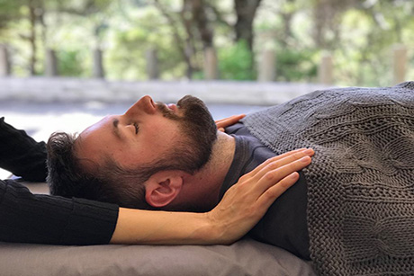

Biodynamic Craniosacral Therapy is a non-manipulative form of bodywork that works with the body's intelligence to heal and repair. Therapists are trained to create calm, still and embodied presence which enables your body to feel safe, supported and held.
This sense of safety allows your brain to switch from flight or fight to rest and repair.
It is in this state that healing and change can begin to take place
This therapy offers support in a holistic approach to working with both recent injury and long term medical issues, including:
Stress and anxiety management
Headaches & migraines
Chronic fatigue
Depression & emotional issues
Insomnia / sleep issues
Recent muscular strain /injuries
Birth trauma
other health conditions
Practitioners generally work with a wide variety of clients who seek treatment of a range of symptoms including pain, fatigue, stress-related conditions, as well as difficulties with sleep and digestive issues.
BCST works particularly well with trauma by gently facilitating your body and brain to resolve held experiences without the need to revisit the original traumatic event.
Other clients are interested in improving general physical, mental and emotional well-being.
YOU ARE IN SAFE HANDS
Biodynamic touch is light and reverential. There is never any pressure, manipulation or force.
The therapy is focused on the whole person: that emotional, mental, spiritual and physical health are all interconnected. A client-led practice, the pace of treatment is set by you and the requirements of your body.
A core principle of BCST is that health is always present in every body. Sometimes when the focus is on illness, pain or pathology, it is possible to lose a connection with the underlying feelings of health, comfort and ease.
BCST can help you reconnect to the health and vitality inside you.

What to expect in a session
We will go through your health history and current concerns before you are asked to lay (or sit) fully clothed on a treatment table. As your therapist, I will make gentle contact with your body in certain hand holds and guide you to explore the sensations which arise.
As your awareness increases, you will notice the tensions and deeply held restrictions in your body. These are unconscious and habitual. When your brain becomes conscious of them, it can then create change. Clients report noticing feelings of release, small movements and adjustments, as well as temperature changes and a deep sense of relaxation or relief.